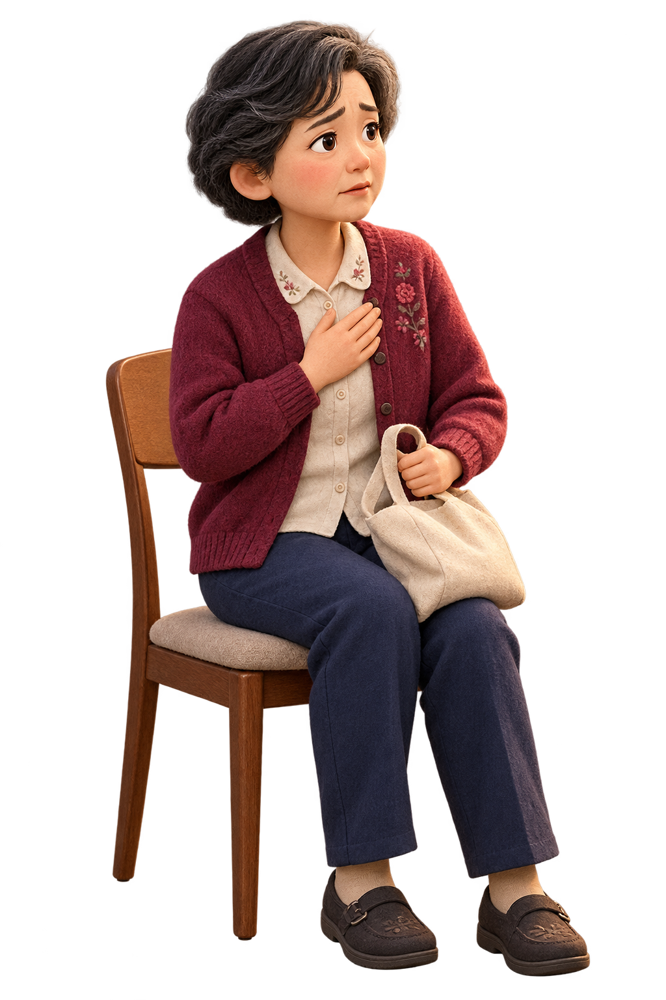

患者
—
你会怎样回应？
人物反应悲伤未解
—
带教点评
—
给住院医师与实习医师的沉浸式沟通训练
还要与患者和家属共同面对：下一步怎么办、谁来决定，以及怎样让每一句话都经得起临床与人心的考验。
情境课程
没有匹配的病例，换个关键词试试。
不是“情商选择题”
只说温柔的话，可能漏掉危险信号；只把信息问全，也可能失去信任。每个选择都会改变五项能力，并决定你最终能否与对方形成安全、可理解、可执行的方案。

—
你会怎样回应？
—
—
会谈复盘
—
—
本机学习记录
记录只保存在当前浏览器，不上传患者信息或个人数据。
教学设计与边界
在临床信息获取、危险信号识别、通俗解释、共情回应和共同决策之间取得平衡。系统不把一句话判成永远正确或错误，而是解释它在当前情境中的作用与代价。
个人练习后，可由带教医师追问“如果患者换一种回答怎么办”。小组教学时，可先投票再比较不同选项造成的信息质量与信任变化。
本项目是教学模拟，不替代真实诊疗、伦理会诊、机构流程或所在地法律。病例均为虚构组合，不对应真实患者。
上线用于正式教学前，应由相关专科医师、医学伦理教师、护理团队及本机构法务/医务部门共同审阅，尤其是急症处置、决策能力、知情同意与生命末期内容。
页面中的经典名言采用常见中文意译，仅用于营造叙事情境；正式出版前请核对原始语种、版本与译文。人物、场景及情绪变体插画均为本项目生成式原创素材。